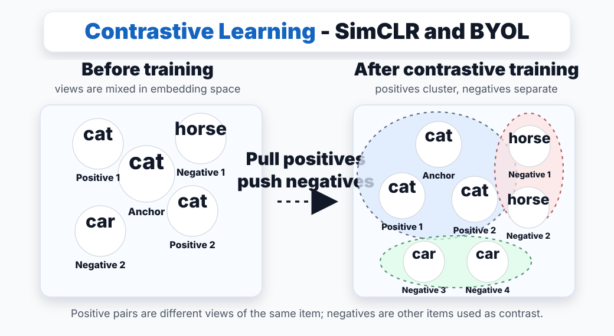
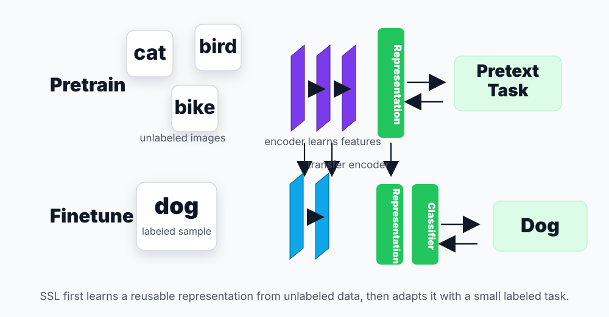

🎭 Contrastive Learning对比学习
Contrastive and Self-Supervised Learning
Lecture 15 asks a practical question: if labels are expensive, can we create a useful training signal from unlabeled data? Contrastive learning is one major answer.
1. Concept Understanding
Self-supervised learning builds a supervised-looking task from raw data itself. The goal is not usually the pretext task; the goal is a reusable representation that transfers to downstream tasks.
2. Plain-English Explanation
Think of a model learning to recognize a person from different photos. A front-facing photo and a cropped photo of the same person should land near each other; a different person should land farther away.
The labels are created by the data pipeline: two augmentations of one image are a positive pair; other images in the batch become negatives. Useful augmentations include cropping, flipping, blur, color shifts, and mild rotations.


3. Core Intuition
Contrastive learning combines two pressures. Alignment pulls positives together; separation keeps negatives apart. Good embeddings preserve semantic content while ignoring nuisance transformations such as crop, color jitter, or mild rotation.
That is why the lecture emphasizes invariance: the identity of an image should survive common augmentations, so the representation should be stable under those augmentations.
Negatives also prevent collapse. If the model only minimized distance between positive views, it could map every input to the same constant vector; negatives make that degenerate solution expensive.
4. Key Equations
What it does. Cosine similarity compares direction rather than raw length, which is why it works well for representation vectors.
What it does. The numerator is the positive-pair score. The denominator is a softmax pool containing that positive plus all negatives, so the loss is small only when the positive receives most of the probability mass.
What it does. CLIP-style learning is classification over candidates, except both sides are learned encoders in a shared embedding space.
What it does. The positive should be closer to the anchor than the negative by at least margin $m$.
5. Worked Examples
6. Problem-Solving Tips
- Always label anchor, positive, negatives, encoder, and score function before writing the loss.
- If vectors are normalized, use dot products directly for cosine similarity.
- Lower temperature makes the softmax more confident; it magnifies score gaps.
- If labels are available, supervised contrastive learning can treat same-class examples as positives and different-class examples as negatives.
- For CLIP-style questions, ask what each encoder can embed at test time. That usually explains zero-shot behavior.
7. Common Mistakes
- Using the positive sample in the denominator twice incorrectly. The denominator includes the positive term plus negatives.
- Forgetting temperature $\tau$ in every logit, not just the positive one.
- Forgetting why negatives matter: without a separation pressure, the encoder can collapse to a constant embedding.
- Calling every unlabeled method "contrastive." Reconstruction and masked prediction are self-supervised, but not necessarily contrastive.
- Explaining CLIP zero-shot as magic rather than as text encoder reuse over new class prompts.
8. Exam Focus
- Define positive and negative pairs for SimCLR-like training.
- Compute InfoNCE for a small set of feature vectors.
- Explain temperature qualitatively.
- Explain collapse and why negative pairs prevent it.
- Compare InfoNCE with triplet loss.
- Show how softmax classification is a special case of dual-encoder contrastive learning.
9. Quick Checklist
- SSL creates labels from data itself.
- Contrastive learning pulls positives together and pushes negatives apart.
- I can name the anchor, positive, and negative samples.
- InfoNCE is softmax cross-entropy over one positive among candidates.
- Negatives prevent representation collapse.
- SimCLR uses two augmented views and minibatch negatives.
- CLIP works because both images and text are embedded into the same space.
- Triplet loss uses one negative; InfoNCE uses multiple negatives.
对比学习与自监督学习 · Contrastive / SSL
Lecture 15 的核心问题很现实：label 很贵时，能不能从 unlabeled data 自己构造训练信号？Contrastive learning 是其中最重要的一种答案。
1. 概念理解 / Concept Understanding
Self-supervised learning 是从原始数据本身构造一个“像监督学习一样”的任务。真正目标通常不是 pretext task 本身，而是学到可迁移的 representation。
2. 大白话理解 / Plain-English Explanation
想象模型在学“认人”：同一个人的正脸照和裁剪照应该离得近；另一个人的照片应该离得远。
这里的 label 不是人工标的，而是 data pipeline 造出来的：同一图片的两个 augmentations 是 positive pair，batch 里的其它图片就是 negatives。常见 augmentations 包括 random crop、flip、blur、color shift、轻微 rotation。
3. 核心直觉 / Core Intuition
Contrastive learning 同时做两件事：alignment 把 positives 拉近，separation 把 negatives 拉开。好的 embedding 应该保留语义内容，同时忽略 crop、颜色扰动、轻微旋转这些 nuisance transformations。
所以 Lecture 15 强调 invariance principle：图片内容经过常见变换后仍然是同一个对象，representation 也应该稳定。
Negatives 还负责防止 collapse。如果只要求 positive views 距离变小，encoder 最偷懒的做法是把所有输入都映射成同一个 constant vector；有 negatives 后，这种 degenerate solution 会被惩罚。
4. 核心公式 / Key Equations
这个公式在做什么？ Cosine similarity 比的是方向而不是原始长度，所以很适合比较 representation vectors。
这个公式在做什么？ 分子是 positive-pair score；分母是 positive 加所有 negatives 的 softmax pool。只有当 positive pair 在所有候选里拿到大部分 probability mass 时，这个 loss 才会小。
这个公式在做什么？ CLIP-style learning 本质上是在候选集合里分类，只是两边都由 encoder 映射到同一个 embedding space。
这个公式在做什么？ 它要求 anchor 到 positive 的距离，比 anchor 到 negative 的距离至少小 $m$。
5. 例题讲解 / Worked Examples
6. 解题技巧 / Problem-Solving Tips
- 写 loss 前先标出 anchor、positive、negatives、encoder、score function。
- 向量已归一化时，cosine similarity 直接用 dot product。
- $\tau$ 越小，softmax 越自信，score 差距被放大。
- 如果有 labels，supervised contrastive learning 可以把同 class 样本当 positives，不同 class 样本当 negatives。
- CLIP 题要问：测试时 $f_2$ 能不能编码新的文本类别？这通常就是 zero-shot 的关键。
7. 常见错误 / Common Mistakes
- denominator 写错：它包含 positive term 加 negatives，不是只有 negatives。
- 只给 positive 除以 $\tau$，忘记所有 logits 都要除以 temperature。
- 忘记 negatives 为什么重要：没有 separation pressure，encoder 可能 collapse 成 constant embedding。
- 把所有 unlabeled method 都叫 contrastive；reconstruction 和 masked prediction 是 SSL，但不一定是 contrastive。
- 把 CLIP zero-shot 解释成玄学，而不是 text encoder 对新 class prompt 的泛化。
8. 考试重点 / Exam Focus
- 能定义 SimCLR-style positive / negative pairs。
- 能对小 feature set 手算 InfoNCE。
- 能定性解释 temperature。
- 能解释 collapse，以及为什么 negative pairs 能防止它。
- 能比较 InfoNCE 和 triplet loss。
- 能说明 softmax classification 是 dual-encoder contrastive learning 的特例。
9. 速记清单 / Quick Checklist
- SSL 从数据本身造 supervision。
- Contrastive = 拉近 positives，推远 negatives。
- 我能说清 anchor、positive、negative 分别是什么。
- InfoNCE = 在候选集合中识别唯一 positive 的 softmax CE。
- Negatives 的关键作用之一是防止 representation collapse。
- SimCLR 使用 two augmented views 和 minibatch negatives。
- CLIP 的关键是 image 和 text 进同一个 embedding space。
- Triplet loss 用一个 negative；InfoNCE 用多个 negatives。